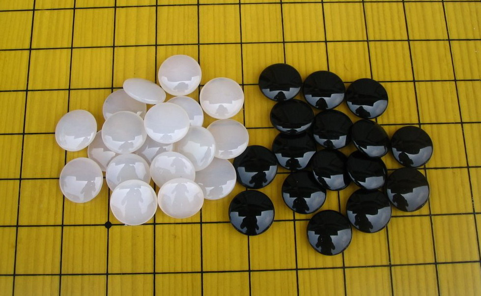

比赛棋评汇
#1 比赛棋评汇作者：潇洒 发表时间：2009-3-29 1:55:05
由于浙江论坛系统出现问题
所以转载到此论坛 方便五子棋爱好者学习
［ 浪人痴痴 于 2009-4-12 20:50:57 时奖励此帖[金币加 20 威望加1］
#2 全国赛自战解说一（kydzhu）作者：潇洒 发表时间：2009-3-29 1:58:11
这是我全国赛第四轮时一盘对局，对手是重庆的诌入志（折枝客），前三轮大家都3胜，而且他上一轮刚刚用瑞星白12团的变化持黑胜了北京著名老师级棋手殷力成，这个白12在第一天出现的好几盘棋里都是白胜。。可见他这次比赛对瑞星变化准备之多。开局他持黑，果然，他继续开出了瑞星局，我想了一会，感觉他准备那么多。。我拿黑也没有想到什么太好的变化来走，所以想了一会想到了一个赛前和蓝鲸拆的白12。于是就没有交换。黑也随我所愿没有在11手时走什么别的点。于是我走了白12k7，这个据说ando说必胜？不过赛前拆了好象有两个点都胜不了。黑如果走最强的走法的话，结果他长考了一会走了一个比较弱的13，我看了一下感觉黑13没有什么实质性的优势，于是14防完我就感觉我可以交换拿到先手了。15后我一冲在右边冲出一个联系点。然后再防了回去。。然后这里瞄着黑g10的四四，黑无奈的利用先手来盖了一手，同时右边还有一个三三。。所以黑走了19，21两手交换。然后再防了进来，接着我盖完他就很难受了。他活三后我看到了可以做长连的手段于是就冲了活三想先做个长连然后围绕这个长连来做棋进攻。但是他似乎对这个局面已经没有什么信心来防守了。。没有经过太多计算就冲了一手，再防我活三。。于是我i4做了一手杀后黑怎么都逃不掉f6三三禁手了。到这黑投了。 这盘棋总的来说还是开局选择上选对了。。正好走了个对手不熟的12。运气也算不错。
［本站用户 岳麓小棋后 于 2009-3-29 2:22:07 花5个金币送您鲜花一朵］
#3 全国赛自战解说二( kydzhu )作者：潇洒 发表时间：2009-3-29 2:45:29
做为前四轮唯一两个4胜的选手，第四轮结束我们就知道彼此要对战了。。看完编排表。知道是我先手，面临强敌。一时不知道开什么好了。前4轮后由于我小分低。所以我知道如果这次想冲击前三的话必须要大分高一点，但是毕竟吴昊现在的状态和水平，想赢也不容易。于是我也就开了疏星，赛前和蓝鲸拆过这个5。知道后面的一些走法。。于是就给出了这个两打。。他很欣然的留给了我这个打点。然后我黑9l6，黑9h6的必胜吴昊在浙江比赛时演示过了。。这里本来以为他会走白10k6。不过如果他那么走的话我会走k9，而不是11级说的k8。。k8是差不多白必胜了。。不过k9的话好象白如果急功那么黑到中盘会比较有优势。结果他实战白10团了一下。 。感觉上他似乎想尽量往他熟悉的那个必胜形状上去套，我算了一会感觉白10也很强。11似乎唯一，接着12活三黑还是唯一，然后交换到16，17还是唯一，汗啊。。这几手棋。。真是。。。由于我自己对这个局也没有太多研究。。所以走到17真是。。。不过17防完以后我就比较安心了。。感觉他已经没什么棋了。吴昊似乎也意识到自己的棋没有太好的进攻走法了。。而实战他又怕如果18k8交换后我防完k9将来他控制不住黑棋的外势。于是18手时他就开始想要控制黑外势，19我肯定把k8的便宜先占了。他防完20后。。计算下。。他没有进攻的杀棋。虽然左边有个活二可以上下联系。不过没杀。于是我就先抢 了j4这个黑棋好点。一子通三路。如果21我继续去赛边防边做的话恐怕没有机会走j4。这里他计算了好久。。赛后聊天里他说他算了感觉单防防不住了。。这里赛后拆的时候感觉22k5的话。。黑似乎没有直接的杀了。。不过比赛由于包干制，也不容计算太多时间在一个地方。于是他又看到了左边那个活二眠三和右边白棋的联系。。想利用这些先手。来削我右边黑棋进攻棋型，同时他也不想损了自己将来在下面的进攻，于是直接跳三来交换，22--26，27我感觉防在上面的话将来也起不到什么联系作用于是就防在左边。同时在左边也留出一些棋，28后我肯定不肯直接冲四来交换那样黑太亏了，又算了一下反完l7后白虽然可以做黑四三三。但是上面还是没有杀。于是就大胆的走了。他也没有做我四三三禁。直接把上面的冲完了跳三。。这里他有一点漏算。。他似乎算的是我会冲m6来拿先手。。结果我单防中间后就有v 。到这白棋基本有些崩溃了。。他无奈的活了手三。这里我冲k3后发现右边黑有一套k5，n8，l9，l8，m8，n5。m4，n4，n7的vcf。但是仔细一看在上面有个反四。再看白活三后在上面也有个vcf。。看到右边已经杀棋，再看到前面左边留下来的棋。。这里正好有个f4的先手。。再算了一下他似乎怎么冲左边都能有套杀。于是f4抢回先手。。他算了一会没有交换到先手的走法。于是防了一手。然后我右边就冲了两手杀了。 这盘棋虽然赢了。不过也是比较侥幸。做为现在全国发挥最稳定的棋手，吴昊在接下去的比赛中还是充分的发挥了自身的水平。［本站用户 岳麓小棋后 于 2009-3-29 3:17:08 花5个金币送您鲜花一朵］
#4 全国赛自战解说三(kydzhu)作者：潇洒 发表时间：2009-3-29 2:54:18
这是第三天比赛的第一局比赛，对手是薛文曦，都是上海的选手。不过由于以前我没怎么去周六活动，所以对他的棋也不是十分了解。开局他想了一会开了山月局，之前看他有些比赛谱山月似乎开的挺多，心想他应该有挺多的研究。（赛后听说他那天早上起来还拆了2个小时这个局，汗~）毕竟优势局，于是我选择交换，他白4有点出乎我意料，因为我记得他这个白4黑棋两打似乎也几乎必胜的。于是我边算边回忆出了两打点，他留下二打后很快的双方摆起了之前26手的定试，27手具体在哪必胜我就不太清楚了。。毕竟自己平时对这些局没有研究。想起来似乎几个月前在网上看到过魔法（陈文夏）在网上下棋走过这么一盘棋他就走了我实战的27，再看一下似乎也不错。就走了。他28，30在右边交换两手。这里我看了一下似乎31防j8的话白棋在右边有一些进攻，而我防在j4的话黑就比较容易控制。而且在右上也留下一些将来做棋点。在对这个局面不是太了解的情况下我还是选择了比较稳妥的走法。j4，结果他右边冲完两手之后，我突然发觉右上被逼到了角落里似乎将来没有什么进攻空间了。而下面的进攻也被他冲了j9后防掉了一个斜线点的连接。然后他再防了过来，这时我算了好久都没看到有什么好的进攻方法，于是我37再盖了一手对黑进攻比较大限制的眠三，他也怕我右下的形状吧。。38直接断我右边，这时我隐约感觉到下面有杀，计算了一圈，还是决定先做一手杀看应手，39e6做杀，我算了当时他防e5我下面也没有直接的杀不过e5的话我好象可以放心的在下面继续做棋了，可能他这里局部研究还比较深吧。他直接档了e8。这里我出现了一个误算，我以为杀了，41活三防左边唯一，我算到我下面交换完会白左边会有个四三，但是当时我以为我可以利用e4，d5，然后将来先防下c6有个先手四三。然后右下联系到有个k11双杀，结果走了几步以后发现自己冲了h9后左上没有了那个c6先手了。。于是后面很无奈的冲四连续把局部交换干净，再去右边防了。到这我基本感觉这棋已经没戏了，后面在右边交换的属于比较无奈了。到69手和棋。整盘棋我觉得我的战术思路没有太多的错，毕竟在自己不熟悉的局面下选择稳的走法比较合适。全盘控制，至少把棋局掌握在自己手中，整盘棋没有让对手有什么先手来进攻。所以对于棋局的进程我还比较满意。不过自己平时对这种局的涉猎研究确实很不够。这时就体现出来了。还有计算时没有太过验算出现误算。下面我摆下31反防的话白似乎就不能像前面那样防守了。拆了一下右边的进攻白似乎也没什么棋。或许这样就可以胜，也或许白还有什么更强的手段
［本站用户 岳麓小棋后 于 2009-3-29 3:49:12 花5个金币送您鲜花一朵］
#5 全国赛自战解说四(kydzhu)作者：潇洒 发表时间：2009-3-29 3:00:19
到了第7轮，由于第6轮和了，我的领先优势只剩了0，5分，于是这盘我想不能再和了，我开局，对手是西部飞扬（周可鼎），大家去年认识之后关系还不错，去年他全国赛时我想起他松月两打的变化就不走常见的，赛前拆过一下这个黑7的变化，我的白8是必败的，不过拆的过程中了解到这个8黑要必胜中间要有连续好几手做棋，想胜就得拼了。于是我就开了松月，他也没多想就交换了。。到他走出黑7我想我也不管了。。就还是照着前面想的思路走吧。。交换到黑13感觉他毕竟还是对松月很有研究啊。都正确，那我也只有走最强的14，他计算了一会之后似乎看到了杀，就很快开始落子进攻，他15一跳三我就放心多了。。因为这里随便怎么追胜，白都有个反，所以我也很快落子（不想让他想到的思路停顿）。到19他发觉有点不对劲了。。这里杀不掉了。。不过这个时候已经是骑虎难下了。。想不功也不知道该走哪了。。他还是强行先要了个先手21f5我22反四三，他23继续做v。我24一盖，这棋黑就彻底没棋了。。到这里我感觉我基本可以胜了。。白的外势太强了。他看了一会防了25i6，那个点也挺强了。如果我占到。那么我一子通三路，应该也可以简单胜，主要他别的地方也防不出什么进攻来。既然上面防掉了那么我当然就寻求左下和右下的联系了。。26做 了套vcf。由于怕我h11的联系。不想单防在右边。 所以27只能先冲一下解我的vcf再防了他觉得对我来说很重要的h11。到这里我算了一下直接的vct。利用i11，g13再饶到左边去。不过发现会有个黑反先，于是再看了一下反正黑也没棋，就先活了手三，然后左边做d10，由于右边之前做到的优势，下面有g13，j10胜，他这里很无奈只能防我那个斜二。他一防f12，我就开始计算追胜了。发现我这里左下冲四活d11的时候他必须反。而如果只是单反那么我e10，f10冲完拿到先手再活个三还是简单胜所以他只能在上面先冲了一手d5。做个反四。算到这里，我发现上面他d5之后随便另一个眠三怎么冲我上面都能留下b4这个冲，然后发现右边l8的联系。看到这里我感觉就可以简单胜了。。所以也没多算左下局部的杀。就照着思路开始走。果然前面几手他都照我想的走了。。他这里g8没有先冲。当然先冲再反也一样。我可以直接f13反四三拿个先手然后还是右边的联系来杀。接着我连续冲四交换几手之后做到48l8。双杀了。[
［本站用户 岳麓小棋后 于 2009-3-29 3:49:28 花5个金币送您鲜花一朵］
#6 全国赛自战解说1(lllllasd)作者：潇洒 发表时间：2009-3-29 3:05:06
一年一度的全国赛结束了，按照惯例又要写这次全国赛的自战解说。可是想来想去发现这次自己下的棋有质量的太少了。这次比赛一开始还算顺利，可连续被许宾蔡力杰逼和后心理上出现了严重的问题，面对相对较弱的对手却丢了分。连续4轮不胜后还好碰到胡夕海棠帮我稳定住了情绪。否则最后面对薛文曦的时候恐怕还不能正常发挥。所以这里就大概找几盘还算过得去的棋说说吧第三轮黑：吴镝 白：蔡力杰 和棋 比赛的第一天我可说是最轻松的了，连续两盘使用同一个变化轻松取胜。这样状态并没有调整出来，第二天第一个面对的对手就是蔡力杰。他开局没经过任何思考就开出了瑞星，很明显是对第一天我使用的瑞星白14进行了准备。这是在逼迫我出变招。选择交换后我走出了11的黑第三点。对与这个黑11我实战中基本还没有输过，算是比较有信心的。可后面蔡力杰12-18想都不想就下了出来。其中12到16是我去年对139时139下出来的。18是我棋评中认为的强点。看来他对我这个变化还是有准备的。这时白右下直接成杀没有，始终欠一手棋。我利用先手先在左边交换掉这个绵三，保留下一定的优势。实战到25进入了我预想的走法。到这里白已经没有先手了，只能期待黑进攻中出错误再在中后盘利用下方的优势找机会。26？这手感觉是很有问题的一手，看似控制住整个左边黑棋的走势。却给我留出了重要的F6。现在黑似乎可在D8，D9这种点强行攻击了。不过大概算了算觉得黑这里的厚度似乎还不够。既然这样还不如利用上面的一点优势交换到下面，取得联系后再进攻。27开始进行交换。到35可说比较成功的。36他长考后走出了D6的败招。这里我进行了长考。发现如果直接在E9攻击的话白可在E7活三进行反击。之后白在左上的优势太大。似乎很难进行防守。这里体现出我计算力上的不足。因为白左上虽然有东西，可黑始终可利用D9，E8的活二牵制。这里直接走E9是正确的黑必胜走法，可惜我实战却没有走出来。这可能就是我和顶尖棋手之间的差距。后来比赛结束和呆呆拆了下这个局面，他很轻易就走出了正确的必胜。让我汗颜。实战看不到杀后我选择了稳健的走法。37开始把白在这里的优势消化了一下。43后提和，蔡力杰也看不到白什么好的进攻点，同意和棋。这盘棋前面的攻击思路还算比较满意，可在最后的决杀却因为计算力的原因放走了。这是不可原谅的。只有继续加强计算力的锻炼才能尽量避免以后继续出现这样的错误。
［本站用户 岳麓小棋后 于 2009-3-29 3:49:49 花5个金币送您鲜花一朵］
#7 全国赛自战解说2(lllllasd)作者：潇洒 发表时间：2009-3-29 3:07:37
第七轮黑：吴镝 白：胡夕 黑胜 从比赛第二天开始，我经历了历次比赛都没有遭遇过的4轮不胜，三和一负的战绩把我完全从第一集团里打了出去。现在再说什么进入前三明显已经不现实。只有争取最后三轮全胜才有进入前8的可能了。第七轮的对手是号称中国最强女子棋手的胡夕。上次和她交手还是在亚洲杯的时候。23手做成必胜的，所以想必她对我有一定的心理压力。果然开局她开出斜月。又是一副想求和的样子。我绝对不能忍受又一轮的不胜了。 于是冒险走出这个黑5。虽然这个黑5已经接近于白必胜了，可知道的人并不多，而且胡夕的应变能力不是很强。白6走了一个弱防，纯粹的防守。白8后棋型已经变成了5走7的一个黑必胜型。实战到这里我回忆了下，这个必胜变化后面有一些想不起来了。既然想不清楚就应该控制起来下，于是走出了实战9-11的变化。这里白唯一应该是I8，那样黑掌握先手，对做死胡夕我还是比较有信心的。可惜她12走出了败招。13后黑必胜。14这个时候无论走在哪里黑左边巨大的优势都可以带来胜利 了。14又走了一手弱防，以下简单VCT。这盘棋终于让我止住了继续下滑的趋势。可算是比赛的一个转折点了。
［本站用户 岳麓小棋后 于 2009-3-29 3:50:11 花5个金币送您鲜花一朵］
#8 全国赛自战解说3(lllllasd)作者：潇洒 发表时间：2009-3-29 3:16:31
最后一轮对前三台已经没什么影响了，在比赛开始前大家都已经清楚前面的成绩。可对我的成绩却还有很大的影响。最后一轮我和薛文曦谁胜谁进前8，如果和了将双双掉出前十。所以此战必须胜。和棋都是无法接受的。由于是我开局，给了我一定的主动权。比赛开始后我回忆薛下过的棋，似乎以山月梳星居多。比较少见的就是明星了，印象中没看到他下过。而明星可说我最熟悉的开局了。虽然说是黑优势开局。可黑棋想取胜难度非常大。白有很多强防。果然薛选择了交换。黑5？看到这个5让我想到了对蔡力杰那盘。那盘棋前面蔡走的非常快，比赛后告诉我是因为看过了我去年的棋评才走的很快的。而现在这个5我去年的棋评里也写到了，是和来华参加亚洲杯的ANTS交流时下的，当时我执白中盘强杀了。难道又是对我有准备才走的这个？看来上海棋手对我的准备还真不少。 可这个黑5前面是不允许我变化的。一路定式下到16。这里薛进入了长考。而且面带苦笑。看到这个我心中安定了。原来是以为我对这个黑5不熟悉来骗的。可惜他没看到我去年的棋评，所以不知道我对明星的熟悉程度。看现在的情况他自己反而忘记了后面的变化。机会来了。 果然薛长考50多分钟下出了实战的17。18当仁不让。18后黑想进攻已经难度很大了，而白在右上的优势形成。为白后面的攻击打下良好的基础。薛又进攻长考下出了19-23的变化。24我选择了稳妥的下法。25意料之中。26后黑彻底丧失了攻击的可能。27是期待这里黑可以交换取得先手。29活三是问题。很明显我的30出乎黑棋意料。30后黑在D12有一手必须应。而白满意的取得了28.30这个斜二。这个斜二是我从24开始就预谋的。有了这个点我在右下的攻击才有保障。实战35后白如愿取得先手，36最正常的攻击方法。这个时候因为28.30这个斜线的存在，黑的冲效果已经不大了。实战的37可以说很强的防守。利用先手想把这个斜线交换掉，可38后我又取得了对右下绝对的控制权。39-47。黑无奈的交换防守。48本来不是我最初的打算，因为这个局部想杀很难，除非骗杀。不过这个时候薛的时间已经只有10分钟了，而我还有50多分钟。时间上的绝对优势必然会对计算产生影响，而且我看黑就算防住我也可以取得这个局部的先手，之后可以去上面进攻了。于是48开始强行做杀。果然，时间对薛产生了影响，他很快走出了49的败招，50后白必胜。 这盘棋黑战术上出现了问题，因为开局方是我，明显我对明星很熟悉，而黑却采用了自己不熟悉的走法。导致先手迅速易手。加上前面消耗的时间过多。这才导致最后的脆败。薛做为一名出色的棋手这次和我一样状态低迷。只能期待下次比赛的崛起了。而我在取胜这盘后侥幸进入了前8，算是没太丢脸：）
［本站用户 岳麓小棋后 于 2009-3-29 3:50:28 花5个金币送您鲜花一朵］
#9 Re:比赛棋评汇作者：启蒙 发表时间：2009-4-8 18:56:16
在下最爱看棋评了！比什么烂终结谱强多了，可以学到些知识！能否再转些呀，XS哥～#10 Re:比赛棋评汇作者：潇洒 发表时间：2009-4-8 19:33:53
呵呵 有机会再转#11 Re:比赛棋评汇作者：小棋情 发表时间：2009-4-8 19:54:16
没图#12 Re:比赛棋评汇作者：nara 发表时间：2009-4-8 20:08:37
楼上的，会不会你没装java虚拟机？#13 Re:Re:比赛棋评汇作者：手术 发表时间：2009-4-12 12:44:37
#14 Re:比赛棋评汇作者：失落刀 发表时间：2009-4-12 12:48:33
手术用的是琉璃子吗？该用云子哈。